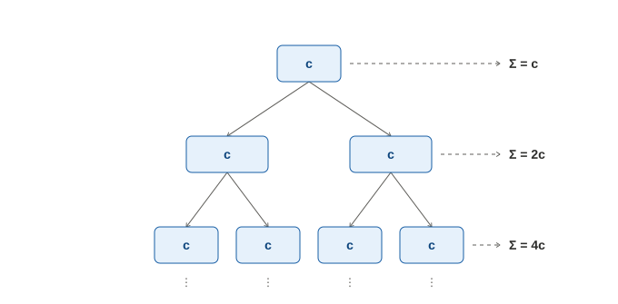
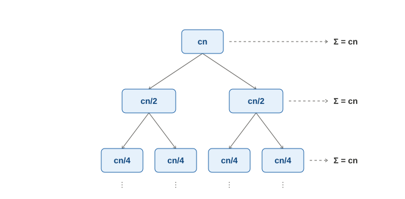
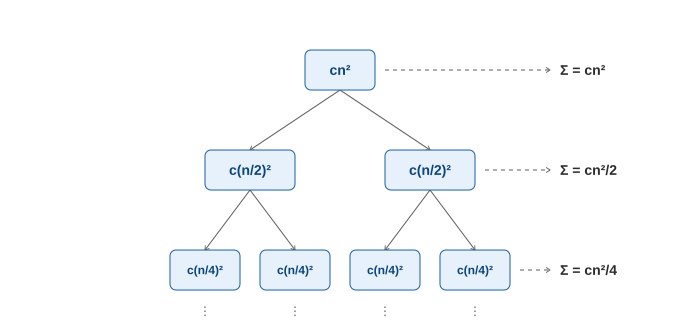

如果你要分析的目標是遞迴的演算法，則主要有 substitution method、recursion tree，以及 master method 三種手段可以處理；本篇章的目的是初步的說明 recursion tree 方法，你若對其他方法有興趣，可以自行閱讀演算法相關的內容。
我們先回顧一下遞迴的精神，它是把大問題拆分成小問題，然後把小問題的結果合併。因此，對於遞迴中的任一層，若將它的時間複雜度以 T(n) 表示，我們都可以寫下以下的式子：
T(n) = 遞迴部份的時間複雜度 + 合併部份的時間複雜度
其中的遞迴部份，若以對半拆分成兩個為例，則整個式子可以重寫成：
T(n) = 2 * T( n / 2 ) + 合併部份的時間複雜度
其中，因為 n 必須是正整數，所以若要分析的嚴謹一點，遞迴部份應該寫成 2 * T( ⌊n / 2⌋ )，此處為了讓範例簡潔一些所以省略。而若你關心拆分成更多個小問題，或者不是等分的狀況，也可以依此類推，本篇會以「對半拆分成兩個」的狀況繼續介紹。
然後，寫遞迴程式是不能忘記終止條件的。因為通常的遞迴演算法，會把問題拆分到某個特定大小之後就不再繼續拆分（請留意，實務上仍要看你怎麼處理問題而定），而當問題大小是常數的時候，我們也可以說時間複雜度是常數，所以會有：
T(1) = O(1)
至於合併部份的時間複雜度是多少，則當然要看你怎樣做合併而定。假設我們有一個遞迴找最大值（雖然實務上不太會這樣做）的方法，會先找左右兩半邊的最大值，然後把兩邊做比較，則合併部份的時間複雜度很顯然的是 O(1)，因此整個遞迴演算法的時間複雜度，可以寫成：
T(n) = 2 * T( n / 2 ) + O(1)
則我們可以說，遞迴頂層的時間複雜度是常數，拆分一變二以後是兩個常數，再拆分二變四以後，每個也都是常數，因此可以畫出這樣的遞迴樹：

其中，畫面右邊的數字是每層的和。那麼這棵樹會長多高呢？因為最底端是 1，而要把 n 對半再對對半再對半...直到 1 為止，會需要對半 lg n 次，所以樹高是 lg n；而把整棵樹上的節點值加起來，就是整個演算法的時間複雜度，因此你可以很容易地藉由級數的公式，得到此演算法的時間複雜度是 O(n)。
我們再來看另外一個範例。假設有某個排序演算法，它會把陣列切成一半，對左邊和右邊分別排序以後，再用 O(n) 的時間複雜度去把排好的兩邊合併（此篇章暫不提及如何合併之類的細節，各位若有興趣可以自行參考「merge sort」），則我們對於整體的時間複雜度，可以寫出這個遞迴式：
T(n) = 2 * T( n / 2 ) + O(n)
它的遞迴樹可以畫成這樣：

而樹高很顯然的也是 lg n，因此各位可以很容易地藉由級數的公式，得到此演算法的時間複雜度是 O(n lg n)。
我們再來看第三個範例。在晶片設計中，有一道流程是檢查是否有任兩個元件靠得太近；而對於這個問題，有個簡單暴力的迴圈做法是兩兩比對，時間複雜度很顯然的是 O(n2)；而我們也可以把這個暴力法寫成遞迴版（雖然實務上還是不太會這樣做），亦即左右兩邊先各自找出距離最近的兩個點，然後合併時再用暴力法檢查一左一右的狀況，最後將三者的結果取最小值後回傳。此演算法的遞迴式是：
T(n) = 2 * T( n / 2 ) + O(n2)
它的遞迴樹可以畫成這樣：

而樹高很顯然的還是 lg n，因此各位可以很容易地藉由級數的公式，得到此演算法的時間複雜度是 O(n2)。
從上述範例可以看出，合併部份跟遞迴本身的輕重占比，會影響整體的複雜度；合併步驟較輕量的話，整體複雜度會偏向被葉節點（樹長到最後不再分支時稱為葉，跟大自然中的樹一樣）主導；而合併步驟份量較重的話，則容易被頂層主導。各位如果去看了 master method 的公式，也會發現類似的精神。